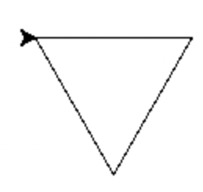

Nas primeiras aulas vamos reavivar os nossos conhecimentos fundamentais de programação em Python: cálculo numérico, listas, iteração e processamento de strings.
Aceda ao repositório replit do Projeto 0, onde pode encontrar um ficheiro projeto0.py: * Criando uma conta no replit e fazendo Fork do projeto, pode resolver o projeto online utilizando o IDE web. * Pode também fazer download do repositório replit como um ficheiro zip para desenvolver o projeto no seu computador e utilizando um IDE à sua escolha.
Neste projeto (primeiras duas semanas de aulas práticas) vamos resolver livremente alguns exercícios lecionados em edições anteriores da cadeira anterior de Programação I. Sinta-se à vontade para requisitar mais ou novos exercícios aos docentes.
Este projeto é completamente livre e não sujeito a avaliação. Os alunos devem sentir-se à vontade para explorar exercícios de diferentes tipos, resolver exercícios em conjunto, discutir soluções com a turma ou pedir sugestões aos docentes. Este enunciado contém também uma potencial solução para cada exercício. A ideia é aferirmos os conhecimentos e lacunas de cada um para podermos adaptar o ritmo da cadeira e a matéria seguinte. Tentem resolver os exercícios antes de olhar para as soluções! O replit tem também um conjunto de testes para poderem testar a correção das vossas soluções para cada questão.
Escreva uma função perim_circ(r) que calcule o perímetro de um círculo com raio r. Por exemplo:
> perim_circ(4)
25.132741228718345def perim_circ(r):
return 2 * math.pi * rEscreva uma função area_circ(r) que calcule a área de um círculo com raio `rª . Por exemplo:
> area_circ(4)
50.26548245743669def area_circ(r):
return math.pi * r**2A conversão entre medidas de temperatura em Fahrenheit e Celsius pode ser efectuada pela fórmula \[C = \frac{5}{9} (F - 32)\], onde F é a temperatura em Fahrenheit e C em Celsius. Escreva uma função celsius(F) que efetue a conversão de Fahrenheit para Celsius de uma temperatura F. Por exemplo:
> celsius(0)
-17.77777777777778
> celsius(20)
-6.666666666666667def celsius(F):
return (5/9) * (F - 32)A distância entre dois pontos no plano de coordenadas \((x_1,y_1)\) e \((x_2,y_2)\) é dada por: \[ d = \sqrt{(x_2 - x_1)^2 + (y_2 - y_1)^2} \] Implemente uma função dist(\(x_1\),\(y_1\),\(x_2\),\(y_2\)) que use esta fórmula para calcular a distância. Por exemplo:
> dist(1,1,4,4)
4.242640687119285def dist(x1,y1,x2,y2):
return math.sqrt((x2-x1)**2 + (y2-y1)**2)Escreva uma função radianos(graus,mins,segs) que, dado o valor de um ângulo em graus, minutos e segundos, converte-o para radianos. Relembre que \(360º\) corresponde a \(2 \pi\) radianos, cada grau tem 60 minutos e cada minuto tem 60 segundos. Por exemplo:
> radianos(0,0,60)
0.0002908882086657216
> radianos(0,60,0)
0.017453292519943295
> radianos(180,10,40)
3.144695461148894def radianos(graus,mins,segs):
mins = mins + segs / 60
graus = graus + mins / 60
return graus * (2 * math.pi / 360)Escreva uma função segundos(horas,mins,segs) que, dada uma duração em horas, minutos e segundos, calcula e retorna essa mesma duração em segundos. Por exemplo:
> segundos(2,15,30)
8130def segundos(horas,mins,segs):
mins = mins + horas * 60
segs = segs + mins * 60
return segsNormalmente calcula-se juros com base num número inteiro de períodos (o número de anos, por exemplo). No entanto, em algumas situações é útil calcular o juro como uma função contínua do tempo. A fórmula para calcular o valor de um investimento ao longo do tempo t é apresentada ao lado, onde \(P_0\) é o montante inicial investido, \(r\) é a taxa de juro e \(t\) é o tempo que passou desde o momento em que se fez o investimento.
\(P(t) = P_0 e^{rt}\)
Escreva uma função juros($P_0,r,t$) que calcule \(P(P_0)\), ou seja, que retorne o valor de um investimento \(P_0\) no instante \(t\), a uma taxa de juro \(r\).
def juros(p0,r,t):
return p0 * math.exp(r * t)Considere um programa que começa com a atribuição de uma lista de valores de temperatura (em Celsius) à variável tempC:
tempC = [-5,0,5,10,15,20,25]tempC1 contendo um ciclo for que imprime cada um dos valores da lista tempC numa linha separada. O resultado deve ser> tempC1()
-5
0
5
10
15
20
25def tempC1():
for temp in tempC:
print(temp)tempC2 que imprima os mesmos valores, gerando-os com a função range.def tempC2():
for temp in range(-5,30,5):
print(temp)tempC3 que utilize um ciclo while para produzir o mesmo resultado da alínea anterior.def tempC3():
temp = -5
while (temp <= 25):
print(temp)
temp += 5tempC4 que utilize um ciclo em que para os valores de temperatura acima, em cada linha imprime o valor em Celsius e o valor correspondente em Fahrenheit.def fahrenheit(c):
return c * (9/5) + 32
def tempC4():
for temp in tempC:
print(temp,fahrenheit(temp))Considere um programa que começa com a seguinte atribuição:
xs = [12, 10, 32, 3, 66, 17, 42, 99, 20]ex22_1 contendo um ciclo for que imprime cada um dos números da lista xs numa linha separada. Ou seja:> ex22_1()
12
10
32
3
66
17
42
99
20def ex22_1():
for x in xs:
print(x)ex22_2 contendo um outro ciclo em que, em cada linha, imprime o número, o seu quadrado, e a sua raiz quadrada.def ex22_2():
for x in xs:
print(x,x**2,math.sqrt(x))ex22_3 contendo um ciclo que soma todos os números em xs usando uma variável auxiliar total, e imprime numa linha separada cada um dos números da lista e a soma parcial até esse número.def ex22_3():
total = 0
for x in xs:
print(x,total)
total += xUsando o módulo turtle, escreva uma função poligono_reg(t,n,lado), sem valor de retorno, que faz uma tartaruga t desenhar um polígono regular com n lados de comprimento lado. Por exemplo, com poligono_reg(t,3,100) a tartaruga t desenha um triângulo equilátero com 100 pixels de lado.
Nota: a soma dos ângulos externos de um polígono é \(360°\).
Para testar, pode utilizar o seguinte programa:
window = turtle.Screen()
alex = turtle.Turtle()
poligono_reg(alex,3,100)
window.mainloop()O resultado esperado será:

def poligono_reg(t,n,lado):
deg = 360 / n
for _ in range(n):
t.forward(lado)
t.right(deg)Usando o módulo turtle, escreva uma função friso(t, n, lado), sem valor de retorno, que desenha um friso em forma de muralha com n ameias em que a largura de cada segmento é lado.
Note que a tartaruga deve terminar com a orientação original.
Para testar, pode utilizar o seguinte programa:
window = turtle.Screen()
alex = turtle.Turtle()
friso(alex,2,50)
window.mainloop()O resultado esperado será o desenho da figura seguinte:
def friso(t,n,lado):
t.right(90)
for _ in range(n):
t.forward(lado)
t.left(90)
t.forward(lado)
t.right(90)
t.forward(lado)
t.right(90)
t.forward(lado)
t.left(90)O preço atual da gasolina é 1.63 euros por litro. Implemente a função valor(v) que, dada a lista v de litros abastecidos numa viagem, retorna o valor total despendido. Por exemplo:
> valor([24.8, 49.1])
120.457def valor(v):
total = 0
for litro in v:
total += litro * 1.63
return totaldef valor(v):
return sum(map(lambda litro : litro * 1.63,v))Escreva uma função classifica(p) que, dada uma pontuação p obtida num exame (de 0 a 100) retorna uma mensagem de classificação de acordo com a tabela seguinte. Utilize essa função para escrever um programa que imprime o número, nome e classificação segundo essa tabela da lista de alunos que se segue (cada tuplo contém o número de aluno, o seu nome, e a classificação de 0 a 100).
| pontuação | mensagem |
|---|---|
| \[< 0 \,\vee > 100\] | “inválido” |
| \[< 50\] | “insuficiente” |
| \[\geq 50 \,\wedge < 70\] | “suficiente” |
| \[\geq 70 \,\wedge < 80\] | “bom” |
| \[\geq 80 \,\wedge < 90\] | “muito bom” |
| \[\geq 90\] | “excelente” |
Por exemplo, para a seguinte lista de pontuações:
studs = [("UP194187304", "José Fonseca", 97),\
("UP194209183", "Manuel Ferreira", 87),\
("UP194294793", "Maria Ramos", 50),\
("UP194399128", "Antonio Fernandes", 45),\
("UP194739873", "Júlia Pinto", -1),\
("UP194739889", "Manuela Faria", 50)]a invocação classifica(studs) deve imprimir:
UP194187304 José Fonseca excelente
UP194209183 Manuel Ferreira muito bom
UP194294793 Maria Ramos suficiente
UP194399128 Antonio Fernandes insuficiente
UP194739873 Júlia Pinto insuficiente
UP194739889 Manuela Faria suficientedef converte_nota(n):
if n < 0 | n > 100: return "inválido"
elif n < 50: return "insuficiente"
elif n >=50 and n < 70: return "suficiente"
elif n >= 70 and n < 80: return "bom"
elif n >= 80 and n < 90: return "muito bom"
else: return "excelente"
def classifica(p):
for numero,nome,nota in p:
print(numero,nome,converte_nota(nota))A fórmula de Leibniz para aproximar \(\pi\) é: \[ \pi = 4 x (1 - \frac{1}{3} + \frac{1}{5} - \frac{1}{7} + \frac{1}{9} + \dots) = 4 * \sum_{n=0}^{\infty} \frac{(-1)^n}{2 n + 1} \]
Implemente a função leibniz(k) que resulta no somatório dos primeiros k termos desta série. Por exemplo:
> leibniz(4)
2.8952380952380956def leibniz(k):
"""Calcula a fórmula de Leibniz para os primeiros k termos"""
return 4 * sum([ ((-1)**n / (2 * n + 1)) for n in range(k) ])sum_within(x, a, b) que calcula a soma dos valores da lista x que estão compreendidos entre a e b. Por exemplo, o resultado de sum_within([4, 7, 44, 23], 17, 46) é 67.
def sum_within(x,a,b):
s = 0
for n in x:
if n >= a and n <= b: s+= n
return sdef sum_wihin(x,a,b):
return sum([n for n in x if n >= a and n <= b ])
sum_wihin([4, 7, 44, 23], 17, 46)Escreva a função maximo2(xs) que calcula o segundo maior valor numa lista xs. Verifique que o procedimento retorna o valor correcto quando o maior valor ocorre mais do que uma vez.
Exemplos:
> maximo2([3, -2, 1, 0, -2, 1])
1
> maximo2([1, 3, 2, 3, 0])
2def maximo2(xs):
m1 = float('-inf')
m2 = float('-inf')
for x in xs:
if x > m1: m1=x
elif x > m2 and x != m1: m2=x
return m2def maximo2(xs):
non_reps = set(xs)
non_reps.remove(max(non_reps))
return max(non_reps)Escreva uma função repetidos(lista) que testa se há elementos repetidos numa lista; o resultado deve ser um valor lógico. A sua função deve funcionar com listas de elementos de vários tipos (e.g. de números ou de cadeias de carateres).
Exemplos:
> repetidos(['ola', 'ole', 'abba', 'ole'])
True
> repetidos([3, 2, -5, 0, 1])
Falsedef repetidos(lista):
vistos = []
for x in lista:
if x in vistos: return True
else: vistos.append(x)
return Falsedef repetidos_set(lista):
return len(lista) != len(set(lista))Podemos contar algarismos decimais na representação de um número fazendo divisões inteiras por dez. Por exemplo: 9733 tem 4 algarismos porque podemos fazer quatro divisões sucessivas por 10 obtendo os quocientes 973, 97, 9 e 0 (paramos quando chegamos a zero).
Escreva uma função algarismos(n) cujo resultado é o número de algarismos decimais de n. Sugestão: use um ciclo while para repetir as divisões sucessivas e contar o número de iterações.
Exemplos:
> algarismos(9)
1
> algarismos(1234)
4def algarismos(n):
i = 0
while (n > 0):
n //= 10
i+=1
return iEscreva duas definições da função conta_letras(txt) que retorna o número de letras (maiúsculas ou minúsculas) sem acentos da cadeia de caracteres txt; numa das versões compare os carateres de txt com 'a', 'A', 'z', 'Z' e na outra utilize as funções pré-definidas string.letters ou string.ascii_letters.
Exemplo:
> conta_letras('Ola, mundo!')
8def is_letra(c):
return (c >= 'a' and c <= 'z') or (c >= 'A' and c <= 'Z')
def conta_letras(txt):
n = 0
for c in txt:
if is_letra(c): n+=1
return ndef conta_letras(txt):
return len([ c for c in txt if is_letra(c) ])def is_letra2(c):
return c.lower() in string.ascii_letters
def conta_letras_compreensao2(txt):
return len([ c for c in txt if is_letra2(c) ])Escreva uma definição da função filtra_letras(txt) que, dada uma cadeia de caracteres txt, retorna uma cadeia com apenas as suas letras maiúsculas ou minúsculas.
Exemplo:
> filtra_letras('Ola!, -- disse ele...')
'Oladisseele'def filtra_letras(txt):
res = ""
for c in txt:
if is_letra(c): res+=c
return resdef filtra_letras(txt):
return "".join([c for c in txt if is_letra(c) ])Uma cadeia de carateres é um palíndromo se as sequências obtidas lida da esquerda para a direita e vice-versa são iguais, independentemente das letras serem maiúsculas ou minúsculas. Exemplo: "reviveR" é um palíndromo. Escreva uma definição da função palindromo(txt) que verifica se uma cadeia de caracteres (ignorando capitalização) é um palindromo; o resultado deve ser True ou False. Por exemplo:
> palindrono("reviveR")
True
> palindrono("aaaa")
True
> palindrono("ola olo")
Falsedef palindrono(txt):
for i in range(len(txt)//2):
if txt[i].lower() != txt[-i-1].lower(): return False
return TrueA cifra de Cesar consiste em substituir cada carater alfabético de uma mensagem pelo carater que está k posições à sua direita, na ordem alfabética. Escreva a função cesar(k,txt) que retorna o valor cifrado de txt usando a chave k. Por exemplo:
> cesar(3,"mensagem secreta")
phqvdjhp#vhfuhwddef cesar(k,txt):
return "".join([ chr(ord(c)+k) for c in txt ])Escreva a função remove_py_com(txt) que remove comentários de linhas de código Python, i.e., os sinais de cardinal # e tudo o que estiver à sua direita. Note que se o cardinal estiver dentro de uma string não é um comentário (considere apenas as strings delimitadas por aspas ").
Exemplos:
> remove_py_com("def f(x): # f function ")
'def f(x): '
> remove_py_com('def "#" f(x) # comentário')
'def "#" f(x) 'str.
def remove_py_com(txt):
stop = False
isstring = False
i = 0
while (not stop and i < len(txt)):
if txt[i] == '\"': isstring = not isstring
elif txt[i] == '#' and not isstring: stop=True
i+=1
return txt[:i-1]Defina uma função forte(passwd) que verifica se uma palavra-passe, dada pela cadeia de caracteres passwd, é forte. Considera-se que a palavra-passe é forte se tiver 8 caracteres ou mais, e incluir pelo menos uma letra maiúscula, uma letra minúscula e um algarismo. O resultado deve ser um valor lógico (True ou False). Exemplos:
> forte('9EwL56')
False
> forte('HXKW1393')
False
> forte('ffu4G7Fghjk')
Truedef forte(passwd):
maiusculas = { c for c in passwd if c.isupper() }
minusculas = { c for c in passwd if c.islower() }
algarismos = { c for c in passwd if c.isdigit() }
return len(passwd) >= 8 and len(maiusculas) > 0 and len(minusculas) > 0 and len(algarismos) > 0Uma cadeia é um palíndromo se se lê da mesma forma nos dois sentidos, ignorando os espaços entre letras, sinais de pontuação e/ou a troca de maiúsculas e minúsculas. Assim, os exemplos seguintes são palíndromos:
"Amora me tem aroma."
"Madam, I'm Adam."
"A man, a plan, a canal: Panama"Escreva uma função palindrono_geral(txt) para testar se uma cadeia de caracteres txt é um palíndromo neste sentido geral. Sugestão: pode resolver este problema combinando os métodos lower() e isalpha() de cadeias de carateres.
def palindrono(txt):
# só temos que percorrer a string até meio
for i in range(len(txt)//2):
# a cada passo compara com o caracter na posição inversa
if txt[i] != txt[-1-i]: return False
return True
def palindrono_geral(txt):
alphas = [ c for c in txt.lower() if c.isalpha() ]
return palindrono(alphas)Escreva uma função ocorrencias(txt,c) que retorna uma lista com os índices das ocorrências de um caracter c na cadeia txt. Por exemplo:
> ocorrencias('banana','a')
[1, 3, 5]def ocorrencias(txt,c):
cs = []
for i,t in enumerate(txt):
if t==c: cs.append(i)
return cs